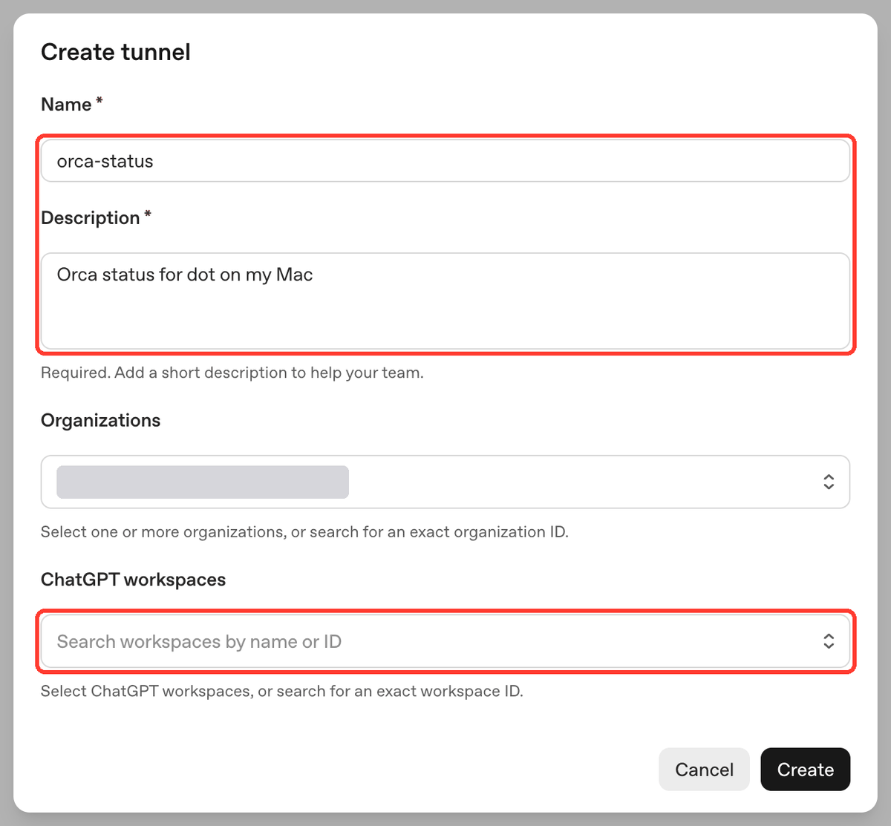
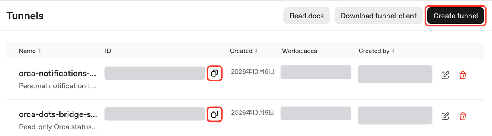
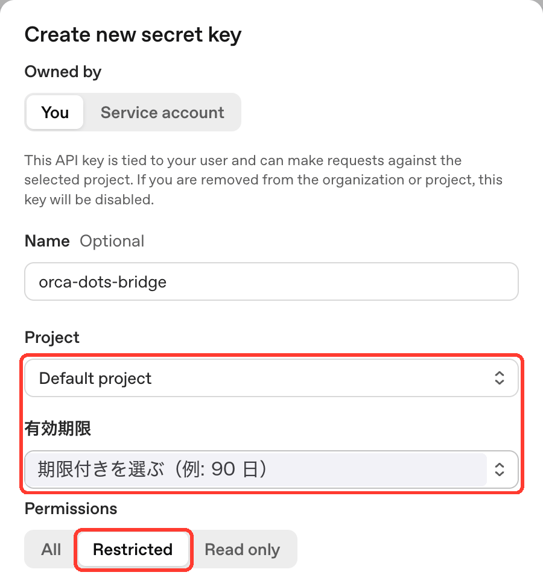
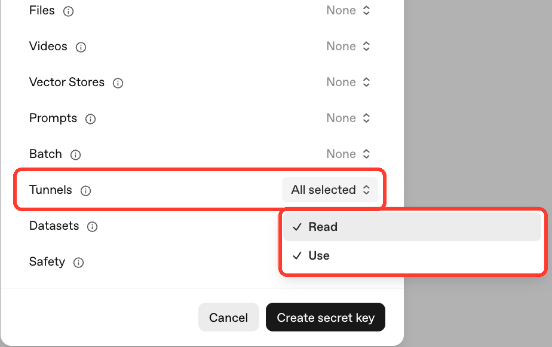
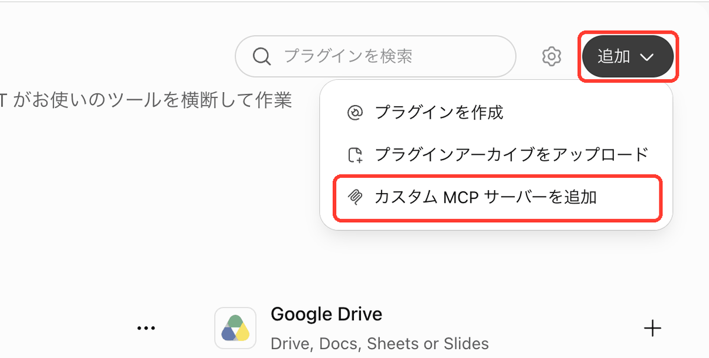
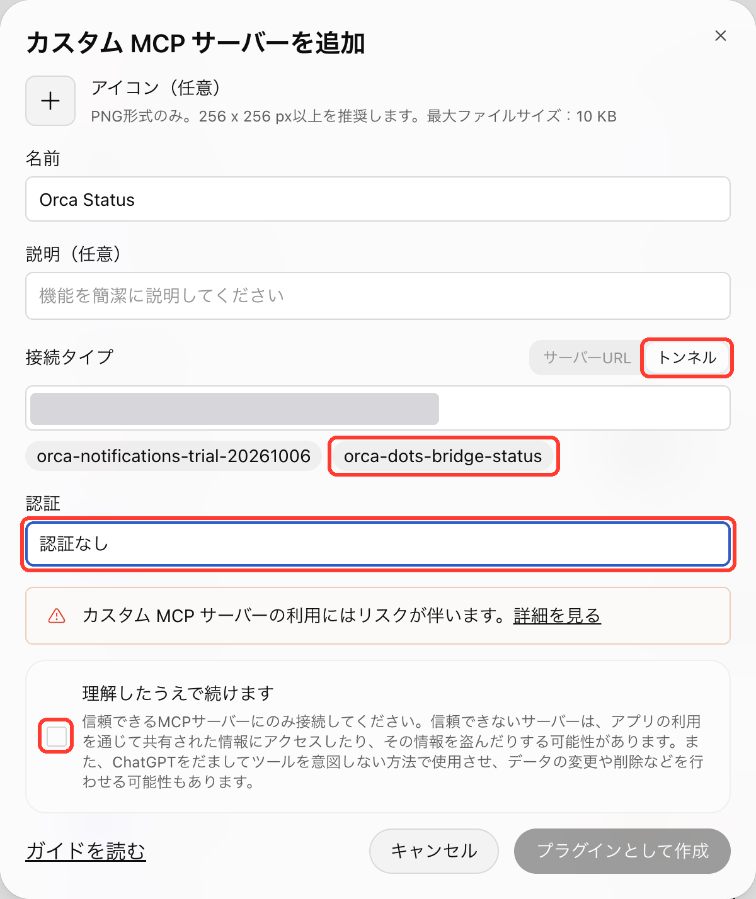

確認中…
Platform の Tunnels で Create tunnel を押し、Name と Description を入れて、ChatGPT workspaces で個人の workspace を選んで作成します。一覧のコピーボタンで Tunnel の ID をコピーし、下に貼り付けてください。


Platform の API keys で Create new secret key を押し、Project と有効期限（期限付き。例: 90 日）を選び、Permissions を Restricted にして Tunnels の Read と Use だけを付けて作成します。表示されたキーをコピーしてください。キーはこの画面には表示されず、クリップボードから直接保存したあとクリップボードを空にします。期限が近づいたら新しいキーを作ってコピーし、「コピーした新しいキーに入れ替える」で入れ替えてください。


ChatGPT のプラグイン画面で右上の追加から「カスタム MCP サーバーを追加」を開きます。名前を入れ、接続タイプをトンネルにして次の Tunnel を選び（一覧に出る名前を押すか ID を貼り付け）、認証を認証なしにします（Tunnel 接続では runtime キーで守られるためです。サーバー URL で公開する構成では認証なしにしないでください）。確認のチェックを入れて「プラグインとして作成」を押してください。作成後の送信の許可などの設定は、このアプリではなく ChatGPT のプラグイン管理画面で行います（「指示の送信を許可」は既定でオフです）。


—